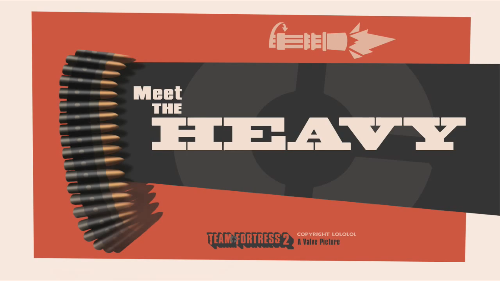

About The Heavy
Overview
Mikhail, deemed The Heavy Weapons Guy of the mercenary team, is a hulking man from the USSR who mows down enemies with relentless firepower and incredible tankiness. He is the largest and most dangerous of the mercs, being compared to a bear, but he is certainly not stupid, having a PHD in Russian literature. Similarly to a bear he is calm and quiet when not in a fight. His father was a counter-revolutionary during the Russian revolution and thus he spent several months in a siberian gulag as a young teen. He broke his family out when the prison was burned to the ground and fled with them, eventually finding a job in the United States as a mercenary. Heavy uses the money he makes as a mercenary to provide for his 3 younger sisters and mother back in Siberia, Russia.
Work Relations
The Heavy cares deeply for his miniguns, even naming each one, those being "Sasha", "Svetlana", "Oksana", and "Sheila". He also shares a deep connection with the Medic, trusting him enough to allow him to do open heart surgery and experimentation without a medical license during a raging battle . Heavy doesn't care much for Scout but tolerates the other mercs and his employers just fine.
Coworkers
- Scout
- Soldier
- Pyro
- Demoman
- Engineer
- Medic
- Sniper
- Spy
| Slot | Weapon | Description |
|---|---|---|
| Primary |  |
The Minigun, named "Sasha" by the Heavy, is an intimidating gatling-style machine gun with a large rotating barrel, a hulking underslung ammunition case, and two handles for supporting its immense weight. |
| Secondary |  |
The Shotgun is a pump-action, sawed-off shotgun which holds 6 shells and boasts incredible damage at close range. |
| Melee |  |
The Fists are Heavy's bare meaty hands wearing fingerless gloves, balled up into a pair of deadly unstopable forces |